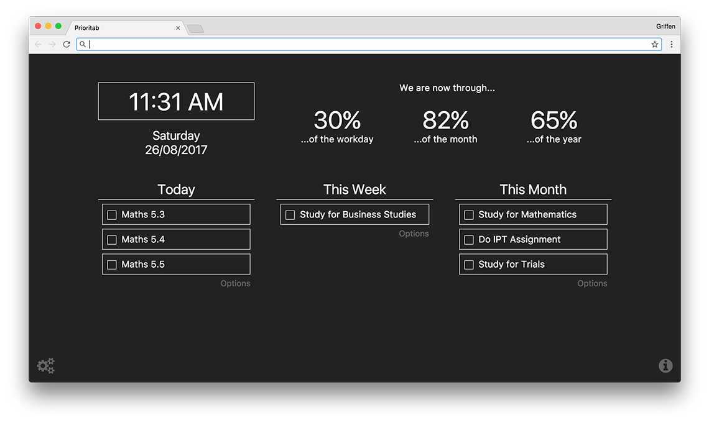

Prioritab
A new tab page that emphasizes setting priorities. Created by Allen Yang. Redesigned by me.
My friend first showed me Prioritab at school as a cool extension he'd found to get things more in order. I started using to get my studying more in order. As I did I started to notice a few things which I thought could be done better. Luckily Prioritab was maintained on GitHub, so I forked the project and got to work. First I started with adding responsive icons from Font Awesome and changing the font stack to match that of Currently, Prioritab's original design inspiration. I also added a couple of animations to make load-in a little more enjoyable. After that I made a new logo for Prioritab, based on the old one but slightly updated to use the "Font Awesome" fa-star and more closely follow Google Chrome's default tab colour scheme. While I was at it I updated most of the libraries Prioritab was using. I spent a couple of months working on a responsive redesign so that Prioritab would work on all size screens. I implemented flex-box, changed the default colours, changed everything to use relative sizing and changed to font stack to system-ui.